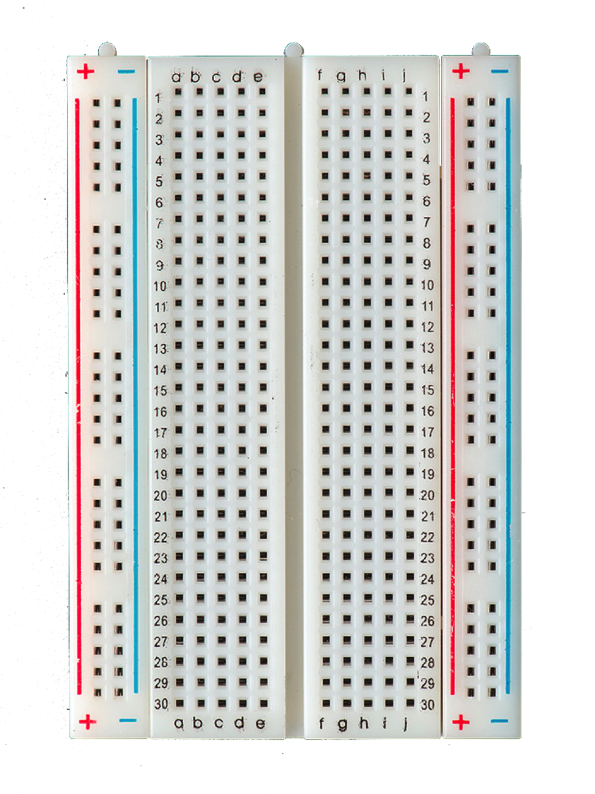

Les 4: Piezo Speaker
In deze les gaan wij gebruik maken van Analog Output. Dit verschilt van de Digital Output. Met Analog Ouput is het mogelijk om een lampje minder fel of feller te laten branden, of een geluidje te produceren. Het is hierdoor ook mogelijk om bijvoorbeeld een servo aan te sturen, zodat objecten kunnen bewegen.
Componenten
De volgende componenten worden gebruikt in deze les:
| 1x Arduino Uno |  |
1x Breadboard |  |
| 1x Weerstand van 220 Ohm |  |
1x Piezo Speaker |  |
Piezo Speaker
De Arduino kan verschillende waardes uitzenden, namelijk analoog en digitaal. Bij Digital Output maakten we gebruik van HIGH and LOW, dit zijn twee waardes. Met Analog Ouput kunnen we gebruik maken van meer dan twee waardes, namelijk alles tussen 0 en 255. Dus in totaal zijn er 256 waardes.
Om deze les te maken heb je de volgende schakeling nodig, deze is hiernaast weergegeven. In deze schakeling wordt niet meer gebruik gemaakt van lampjes maar van een enkele piezo speaker. Deze wordt aangesloten op een digitale poort van de Arduino, let op, naast deze digitale poort moet een rimpeltje staan. Als deze hier niet staat dan ondersteunt deze poort geen Analoge Output en gaat de speaker niet werken. Daarnaast is een weerstand geplaatst op de positieve kant van de speaker, dit zorgt ervoor dat het geluid niet zo hard is.
De piezo speaker heeft twee verschillende poortjes, een lange en een korte. Deze pootjes werken hetzelfde als bij de LED's, het lange pootje is de positieve kant en het korte pootje is de negatieve kant.
De opdracht
Zorg ervoor dat je verschillende toonhoogtes kan produceren met de piezo speaker.